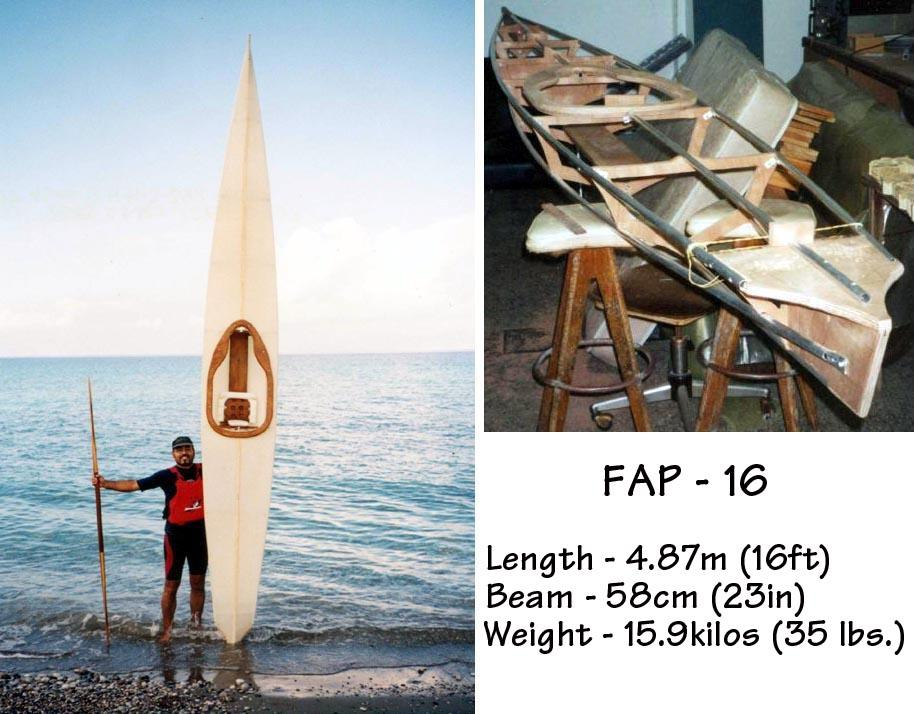

| FAP-16 By Emmanuel Gerogiannakis | Menu Previous Page Next Page |
|
 Emmanuel built his FAP-16 using aluminum tubing with plywood cross sections. The skin is made of cotton duct. Construction details for the folding version can be found at the following LINK. Click on the first pic to continue. Use the Back key to return. |
|